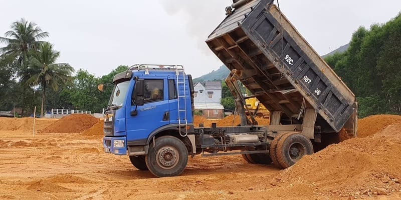
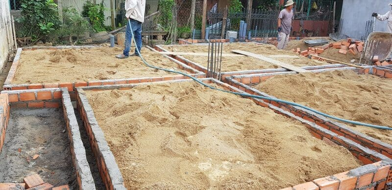

Đổ nền nhà đất hay cát là băn khoăn của nhiều gia chủ trong quá trình chuẩn bị xây dựng, bởi mỗi phương án đều có ưu và nhược điểm riêng, ảnh hưởng trực tiếp đến độ bền và chi phí công trình. Hãy cùng AVA Architects khám phá và tìm ra lựa chọn phù hợp nhất trong bài viết dưới đây.
Xem thêm:
- Thủ tục xin giấy phép xây dựng thế nào?
- Cách nộp hồ sơ xin giấy phép xây dựng online tại Đà Nẵng
- Nên chọn bê tông tươi và bê tông tự trộn
Đổ nền nhà là gì?
Đổ nền nhà là bước xử lý mặt bằng nhằm hình thành lớp nền ổn định trước khi thi công xây dựng. Căn cứ vào địa hình, tính chất nền đất và nhu cầu sử dụng, vật liệu đắp nền có thể là đất, cát hoặc kết hợp cả hai. Công đoạn này giúp san phẳng mặt bằng, nâng cao cốt nền, hạn chế ngập nước và đảm bảo khả năng chịu lực cho công trình.
Tìm hiểu đổ nền nhà bằng đất
Ưu điểm
- Tiết kiệm chi phí: Đất tự nhiên thường sẵn có, nhất là khi tận dụng nguồn đất đào móng hoặc san nền tại công trình, giúp giảm đáng kể chi phí mua vật liệu và vận chuyển.
- Độ ổn định tốt: Với khả năng đầm nén cao, đặc biệt là các loại đất sét hoặc đất thịt, nền nhà sẽ chắc chắn và hạn chế tình trạng sụt lún nếu thi công đúng kỹ thuật.
- Thân thiện môi trường: Việc sử dụng đất tại chỗ góp phần giảm khai thác tài nguyên bên ngoài, đồng thời hạn chế tác động đến môi trường xung quanh.

Đổ nền nhà bằng đất giúp tiết kiệm chi phí và tạo nền móng ổn định (C: Internet)
Nhược điểm
- Khó đảm bảo chất lượng đồng đều: Đất tự nhiên thường chứa tạp chất như rễ cây, đá hoặc bùn, khiến nền đắp khó đạt độ ổn định đồng nhất.
- Nhạy cảm với nước: Những loại đất có hàm lượng sét cao và khả năng thoát nước kém dễ phát sinh hiện tượng lún hoặc trương nở khi gặp mưa lớn.
- Thi công tốn thời gian: Quá trình đầm nén đất yêu cầu thực hiện kỹ lưỡng, cần nhiều nhân lực và thiết bị hơn so với phương án sử dụng cát.
Khi nào nên đổ nền nhà bằng đất
- Khu đất có sẵn nguồn đất tốt, chủ yếu là đất thịt và ít lẫn tạp chất.
- Vị trí xây dựng có địa hình cao, khả năng thoát nước tốt, ít nguy cơ ngập úng.
- Gia chủ có ngân sách hạn chế và ưu tiên phương án tiết kiệm chi phí xây dựng.
Tìm hiểu đổ nền nhà bằng cát
Ưu điểm
- Thi công thuận tiện: Cát có tính linh hoạt cao, dễ san lấp và không đòi hỏi đầm nén phức tạp như đất, giúp rút ngắn thời gian thi công.
- Khả năng thoát nước tốt: Đặc biệt với cát hạt to, nước được thoát nhanh, phù hợp cho các khu vực thấp, dễ ẩm hoặc gần sông, kênh rạch.
- Chất lượng ổn định: Cát thường sạch và ít lẫn tạp chất, tạo lớp nền đồng đều, dễ kiểm soát chất lượng trong quá trình thi công.
Xem thêm:
- Hồ sơ thiết kế là gì? Gồm những tài liệu nào?
- Thủ tục xin cấp phép xây dựng khách sạn 2025
- Có nên xây tường gạch 2 lớp chống nóng không?
Nhược điểm
- Chi phí đầu tư lớn: Giá cát xây dựng, nhất là cát san lấp đạt tiêu chuẩn, thường cao hơn so với đất tự nhiên, đồng thời phát sinh thêm chi phí vận chuyển nếu nguồn cát ở xa.
- Khả năng chịu lực hạn chế: Khi sử dụng cát đơn thuần mà không gia cố bằng các vật liệu khác như đá dăm, nền nhà dễ xảy ra hiện tượng lún dưới tải trọng lớn.
- Nguy cơ xói mòn: Tại các khu vực có dòng nước mạnh, lớp cát san lấp có thể bị cuốn trôi nếu không được xử lý và gia cố phù hợp.

Đổ nền nhà bằng cát giúp thi công nhanh, thoát nước tốt (C: Internet)
Khi nào nên đổ nền nhà bằng cát
- Khu đất có cao độ thấp, thường xuyên bị ngập nước và cần nâng cốt nền trong thời gian ngắn.
- Công trình đòi hỏi mặt nền bằng phẳng, khả năng thoát nước hiệu quả.
- Khu vực xây dựng có sẵn nguồn cát đạt chất lượng với mức chi phí phù hợp.
So sánh đổ nền nhà bằng đất và đổ nền nhà bằng cát
Có thể thấy đổ nền bằng đất và đổ nền bằng cát đều có những ưu – nhược điểm riêng. Đổ nền bằng đất thường có chi phí thấp hơn nhưng thời gian thi công kéo dài do cần đầm nén kỹ lưỡng, khả năng thoát nước phụ thuộc vào từng loại đất và chỉ đạt độ bền cao khi được xử lý đúng kỹ thuật. Phương án này phù hợp với những khu vực có địa hình cao, nền đất tốt.
Trong khi đó, đổ nền bằng cát có chi phí cao hơn nhưng thi công nhanh, khả năng thoát nước tốt và dễ tạo mặt bằng phẳng. Tuy nhiên, nếu không được gia cố phù hợp, độ bền của nền cát có thể thấp hơn. Giải pháp này thường được áp dụng cho các khu vực địa hình thấp, dễ ngập úng và cần yêu cầu thoát nước hiệu quả.
Kết hợp đổ nền nhà bằng đất và cát
Trong thực tế thi công, nhiều công trình không sử dụng đơn lẻ một loại vật liệu mà lựa chọn phương án kết hợp giữa đất và cát nhằm phát huy ưu điểm của cả hai. Cụ thể, lớp nền phía dưới thường dùng đất tự nhiên để giảm chi phí và tăng độ ổn định, trong khi lớp phía trên được phủ cát nhằm tạo mặt bằng phẳng, hỗ trợ thoát nước tốt và thuận tiện cho công đoạn đổ bê tông. Cách làm này thường áp dụng cho các khu vực có địa hình phức tạp, yêu cầu vừa nâng cốt nền vừa đảm bảo khả năng thoát nước hiệu quả.
Đổ nền nhà bằng đất và cát giúp tăng độ ổn định và thoát nước hiệu quả (C: Internet)
Xem thêm:
- Nên xây tường 10 hay tường 20?
- Điều chỉnh bản vẽ có cần xin phép lại không?
- Có nên mua bản vẽ thiết kế nhà có sẵn không?
Quy trình đổ nền nhà đúng kỹ thuật
Dù lựa chọn đổ nền nhà bằng đất hay cát, việc thực hiện đúng quy trình kỹ thuật là yếu tố then chốt để đảm bảo độ bền và chất lượng công trình. Quy trình đổ nền cơ bản thường bao gồm các bước sau: trước hết tiến hành khảo sát địa hình nhằm đánh giá cao độ, độ ẩm và đặc tính nền đất tại khu vực xây dựng. Tiếp theo là công đoạn chuẩn bị mặt bằng, dọn dẹp sạch sẽ cỏ dại, rác thải và các vật cản. Sau đó, đất hoặc cát được san lấp theo từng lớp có độ dày đồng đều, thường từ 20-30cm mỗi lớp. Mỗi lớp vật liệu cần được đầm nén kỹ bằng máy chuyên dụng để hạn chế nguy cơ sụt lún về sau. Khi hoàn tất, tiến hành kiểm tra độ phẳng bằng thước hoặc thiết bị laser, cuối cùng là phủ lớp cát mỏng nếu cần hoặc chuyển sang công đoạn đổ bê tông để hoàn thiện nền nhà.
Lưu ý khi đổ nền nhà
- Lựa chọn vật liệu đạt tiêu chuẩn: Đất san lấp cần sạch, không chứa bùn hay tạp chất hữu cơ; cát nên ưu tiên loại hạt to, ít lẫn tạp chất để đảm bảo chất lượng nền.
- Đảm bảo khả năng thoát nước: Cần thiết kế và xử lý hệ thống thoát nước xung quanh hợp lý nhằm hạn chế tình trạng ngập nước làm suy yếu nền móng.
- Tham vấn chuyên môn: Đối với các công trình quy mô lớn hoặc khu đất có địa hình phức tạp, nên tham khảo ý kiến của kỹ sư xây dựng để lựa chọn giải pháp phù hợp.
Đổ nền nhà đất hay cát đều có những ưu và nhược điểm riêng, phù hợp với từng điều kiện địa hình, ngân sách và yêu cầu kỹ thuật của công trình. Để lựa chọn phương án tối ưu, gia chủ cần cân nhắc kỹ và áp dụng đúng quy trình thi công. Nếu bạn vẫn còn băn khoăn trong quá trình chuẩn bị xây dựng, hãy liên hệ AVA Architects để được tư vấn giải pháp đổ nền phù hợp, đảm bảo chất lượng và độ bền vững cho ngôi nhà của bạn.
- Market Analyst
- Mỹ Vân là Chuyên viên Phân tích Thị trường, đảm nhận vai trò nghiên cứu và phân tích chuyên sâu các xu hướng của ngành kiến trúc, loại hình dự án và thị trường bất động sản cho AVA Architects. Vân đã và đang hỗ trợ AVA Architects liên tục đổi mới và đưa ra quyết định chiến lược chính xác, đồng thời cung cấp cho khách hàng những góc nhìn giá trị để đưa ra lựa chọn đầu tư hiệu quả nhất. Tất cả đều hướng tới mục tiêu củng cố vị thế tiên phong của AVA và cùng khách hàng kiến tạo nên những giá trị bền vững cho tương lai.
 Blog thiết kế AVA14/09/202699+ Mẫu biệt thự phố đẹp, hiện đại, xu hướng năm 2026
Blog thiết kế AVA14/09/202699+ Mẫu biệt thự phố đẹp, hiện đại, xu hướng năm 2026 Blog thiết kế AVA10/09/2026999+ mẫu biệt thự đẹp đẳng cấp, sang trọng nhất 2026
Blog thiết kế AVA10/09/2026999+ mẫu biệt thự đẹp đẳng cấp, sang trọng nhất 2026 Blog thiết kế AVA09/09/2026Mẫu biệt thự hiện đại sang trọng, hiện đại 2026
Blog thiết kế AVA09/09/2026Mẫu biệt thự hiện đại sang trọng, hiện đại 2026 Blog thi công AVA28/04/2026Lợi ích khi xây nhà trọn gói bạn nhất định phải biết
Blog thi công AVA28/04/2026Lợi ích khi xây nhà trọn gói bạn nhất định phải biết